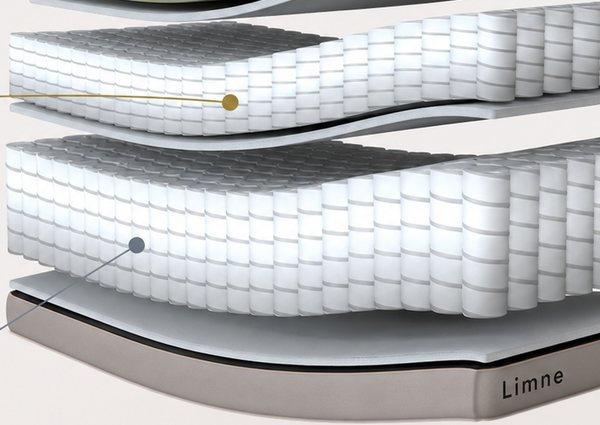
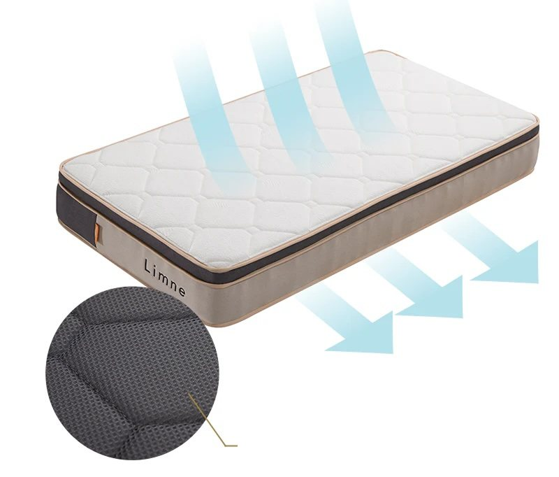

リカバリーマットレスに効果はありますか？

効果があるかどうかは製品ごとに異なり、一律には答えられません。リカバリーマットレスには統一された規格がなく、名称自体が効果を保証するものではないためです。医療機器として認証された製品でも、効果を表示できるのは認証された範囲までです。認証のない製品は、一般的な寝具と同じ扱いになります。また、素材や構造が適したものであっても、体格や寝方によって感じ方は異なります。ご自身の身体に合うかどうかも、あわせて確認してください。

リカバリーマットレスとは、睡眠中の身体への負担をやわらげ、休息をサポートすることを目的とした高機能マットレスのことをいいます。寝ている間の血行促進などから翌日の疲労感などを和らげる効果があり、睡眠の質を高めることができると言われています。公的な規格や統一された定義はなく、設計の考え方は製品ごとに異なります。大きくは2種類に分けられます。1つは高い体圧分散性やスムーズな寝返りによって睡眠中の身体への負担をやわらげるもの、もう1つは特殊な機能性素材によって血行促進や疲労回復を促すとされるものです。
ウレタンを重ねた多層構造や、独立したポケットコイルなどで身体の重みを点ではなく面で分散し、寝姿勢を保ちやすくする設計が採られています。LIMNEでは、三層ウレタン構造・二層ポケットコイル・ミルキーコイルの11層構造の3方式でこの設計に取り組んでいます。
磁気や遠赤外線などの機能を持ち、医療機器として認証を受けたモデルは、認証された範囲内で定められた表示ができます。認証のないマットレスは、効果を表示することはできず、構造設計によって睡眠環境を整えます。LIMNEの現行3モデルは認証を受けておらず、後者の構造設計型にあたります。なお、マットレスに特殊ケア繊維「A.A.TH」のボックスシーツを組み合わせる場合は、寝具全体としては機能性素材を用いる構成になります。
睡眠中の湿気を逃がすために、通気性のよい素材やメッシュ加工を施した通気構造、へたりにくい高耐久素材の採用も特徴です。LIMNEでは、モデルごとに異なる方式で対応しています。モデルごとの仕様は下記「3モデルの構造比較」をご覧ください。
リカバリーマットレスには、機能性素材によるもの、医療機器としての認証によるもの、構造設計によるもの、といった違いがあります。
表は横にスクロールしてご覧いただけます。
| アプローチ | 主な素材・仕組み | 選ぶときに確認すること |
|---|---|---|
| 機能性素材型 ← A.A.TH併用時はこの型 |
特殊繊維や機能性素材を寝具に用いる | 素材の説明と、その根拠が示されているか |
| 医療機器認証型 | 磁気・遠赤外線などの機能で医療機器として認証を受けている | 認証の範囲。効果を表示できるのは認証された範囲までです |
| 構造設計型 ← LIMNEはこの型 |
ウレタン多層構造・ポケットコイルなどの構造で睡眠環境を整える | 体圧分散・寝返りのしやすさ・通気性が、体格や寝方に合うか |
※LIMNEの現行3モデルは構造設計型です。マットレスに特殊ケア繊維A.A.THのボックスシーツを併用する場合は、機能性素材型に準ずる構成になります。
リムネは、
体圧分散・寝返りのしやすさ・通気性といった構造設計によって、
リカバリー体験を睡眠環境から探求するマットレスブランドです。
効果があるかどうかは製品ごとに異なり、一律には答えられません。リカバリーマットレスには統一された規格がなく、名称自体が効果を保証するものではないためです。医療機器として認証された製品でも、効果を表示できるのは認証された範囲までです。認証のない製品は、一般的な寝具と同じ扱いになります。また、素材や構造が適したものであっても、体格や寝方によって感じ方は異なります。ご自身の身体に合うかどうかも、あわせて確認してください。
リカバリーマットレスは、商品名や知名度ではなく、どのアプローチ（機能性素材・医療機器認証・構造設計）で作られているかを確かめて選ぶのが出発点です。機能性素材なら素材の説明を、医療機器なら認証の範囲を、構造設計なら体圧分散や寝返りのしやすさが体格や寝方に合うかを確認してください。保証の期間や条件は各社で異なるため、試せる仕組みがあるかどうかも判断材料になります。
「使えば疲れが取れる」と言い切れるマットレスはありません。疲労には生活習慣など寝具以外の要因も関わり、寝具にできるのは睡眠環境を整えることまでです。LIMNEの現行マットレスも、特定の効果をうたうものではありません。体圧分散や寝返りのしやすさに配慮した構造設計で、睡眠環境づくりに取り組んでいます。

購入者の年代と性別の構成は、次のとおりです。
自社ECの購入者のうち、属性が判明した方の集計です（2025年9月〜2026年8月・当社調べ）。
※購入者の構成を示すものであり、寝具によって疲労が取れることをお約束するものではありません。
日中、はりつめていた「私と社会の境界線」。
眠りは、それをそっとほどいて、私に返す時間。
LIMNEは、その時間のためにマットレスをつくっています。
いつでも誰かとつながり、どこでも仕事にアクセスできる毎日。便利に思えたつながりは、家の中にも、休みの日にも、社会のリズムを流し込んできます。
目の前の誰かを理解すること。それと同じくらい、自分の声に耳を傾けること。LIMNEは、癒しと寛ぎで、一続きになってしまった現代社会に境界線を取り戻すことをミッションに掲げています。
あなたの身体のリズムと、心の輪郭を守ってくれる境界線。それを取り戻す一日の終わりのために、LIMNEは「柔らかいのに沈みすぎない」寝心地を設計しています。
LIMNEのマットレスは、体圧分散・寝返りのしやすさ・通気性という3つの観点から構造を設計しています。
三層構造で体圧を分散し、寝姿勢に配慮した設計。独自素材「スフエアー」と三層ウレタン構造により、柔らかく身体を受け止めながら、体圧を分散し、自然な寝姿勢をサポートする主力モデルです。

三層構造の分解図。各層が異なる役割を持つ。
トップ層はやわらかめの独自高反発素材「スフエアー」。ミドル層は面で支える構造と緻密に計算された溝加工、ボトム層は身体と上部2層をしっかり支える設計です。
真ん中の層に、身体の凸部に合わせた溝加工を施しています。自然なS字カーブを描いた姿勢で寝られる設計です。

生卵をマットレス表面に押し込む実演の様子。
マットレスの上に置いた生卵を手のひらで押し込む実演です。加える力の大きさによって結果は異なります。肩や腰にかかる圧力を面で分散する設計です。
身体の一部に体重や圧がかかりすぎないよう、独自の三層構造が面で包み込むように支えます。三層構造が身体を面で支えるため、肩、腰をやさしく包みます。
動画：生卵を使った圧力分散の実演（LIMNE公式YouTubeチャンネル）。

マットレスカバーのファスナー。
独自素材「スフエアー」は、一般的なウレタン（約88ml/㎠/sec）に対して137ml/㎠/secという試験結果があり、約1.47倍の通気性を持ちます。熱や湿気を逃がしやすいのが特徴です。
マットレスカバーの側面にはメッシュ素材を使用し、湿気を外へ逃がしやすくしています。専用カバーは取り外してご家庭で洗濯が可能です。シーツとの接地面から不衛生になりがちなマットレスカバーを、こまめな洗濯で清潔に保てます。
※一般的なウレタン（約88ml/㎠/sec）と独自素材スフエアー（137ml/㎠/sec）を比較した試験結果です。試験条件により結果は異なります。
日本企画で日本人の体型に合わせた二層ポケットコイル。しっかりと身体を支えながらも、包み込まれるような柔らかさと反発力を両立した高密度二層コイルモデルです。

二層コイルの分解図。上下のコイルが役割を分担する。
コイルを二層に重ねる構造を採用しています。上層のコイルが身体を受け止め、下層のコイルが沈み込みすぎを防ぐため、腰が落ち込みにくく、寝返りがうちやすい設計です。
厚さ25cmのポケットコイルにより、腰まわりを支えながら、肩や背中の凹凸にも細かくフィットします。

二層に重なったコイルと、コイルの配列。
LIMNEの3モデルの中で、このモデルだけが採用する「ツインリカバリー構造」。二層に重なったコイルと、1,714個（キングサイズ）のコイル数で、寝返りのしやすさと体圧分散を両立しています。

コイル構造による空気の通り道と、底面のメッシュ生地。
上下二層のポケットコイル構造により、マットレス内部に空気の通り道を確保するため、湿気がこもりにくい設計です。
さらに防ダニ・抗菌加工も施されているため、通気性と衛生面の両方に配慮したコイルマットレスです。
日本企画のコイルマットレスで、リムネらしい寝心地の良さとしっかりしたコイルの支えのバランスを目指したモデルです。

11層構造の分解図。7層目がミルキーコイル。
湿度の高い日本特有の気候や日本人の体型を考慮し、ミルキーコイルの硬さや径数、コイル数などを設計しています。580個のコイルが身体の凹凸に合わせて圧力を分散します。
硬く押し返すのではなく、ミルキーコイルの弾力で綺麗な寝姿勢を翌朝までキープすることを目指した設計です。
表は横にスクロールしてご覧いただけます。
| スフエアーモデル | リッチコイルモデル | エントリーモデル | |
|---|---|---|---|
| 構造 | ウレタン三層構造（厚さ22cm） | 二層ポケットコイル（厚さ25cm） | ミルキーコイル・11層構造 |
| 中身 | 独自高反発素材「スフエアー」。TOP 25N／MID 120N／BTM 140Nの3層設計 | 二層に重ねたポケットコイル1,714個（キングサイズ）の「ツインリカバリー構造」 | 日本の気候・体型を考慮したミルキーコイル580個 |
| 寝心地の設計 | 柔らかく受け止めて、沈みすぎない | 上層で受け止め、下層で沈み込みすぎを防ぐ | コイルの弾力で寝姿勢を保つ |
| 通気の工夫 | 独自素材と、側面のメッシュ素材 | 二層コイル構造による空気の通り道／防ダニ・抗菌加工 | コイル構造による通気 |
| カバー | 取り外して洗濯できます | 取り外せません（乾いた布で拭き取り） | 取り外せません（乾いた布で拭き取り） |
| 耐久試験 | 8万回 | 20万回 | 10万回 |
| 保証 | 10年間交換保証／120日間完全返金保証（標準付帯） | 10年間交換保証／120日間完全返金保証（標準付帯） | 10年間交換保証（標準付帯）／120日間完全返金保証は有償オプション（10,000円・税込／ご購入時のみ） |
| 商品ページ | スフエアーモデル | リッチコイルモデル | エントリーモデル |
※耐久試験の回数と条件はモデルごとに異なります。耐用年数を保証するものではありません。
※無金利分割決済でご購入の場合、120日間完全返金保証の期間は30日間になります。
※完全返金保証には、所定の最低利用期間などの適用条件があります。詳細はショッピングガイドをご確認ください。

包み込まれる柔らかさと、沈みすぎない支えを両立した独自素材のモデル。
商品ページを見る
上下2層のコイルで、寝返りのしやすさと体圧分散を両立したモデル。
商品ページを見る
ミルキーコイル580個で体圧分散に配慮した、はじめての1枚に選びやすいモデル。
商品ページを見る※ここでご紹介している3モデルは、特定の効果を保証するものではありません。体圧分散・寝返り・通気に配慮した構造設計のマットレスです。
我々の使命は「睡眠にとって本当の良いマットレス」をつくりだすことです。新素材を使ってなんとなく良さそうに見せたり、周知された従来の常識を押し付けるようなことは一切やりたくありません。あえて、今までのネムリに真っ向から挑み、ネムリをくつがえすようなマットレスをつくりたい。だからリムネは、独自に設計した試験を繰り返し、「睡眠にとって本当の良いマットレス」という問いに挑みました。

睡眠環境の設計にあたり、寝心地・体圧分散・寝姿勢の考え方について監修をいただいています。

（前略）そのためには、身体の曲線にフィットした、触れた瞬間気持ちよさを感じる、自分に合った寝具を選ぶことが大切です。（後略）
LIMNEは、青山学院大学および脳波研究の専門家との実験にも取り組んでおり、睡眠環境に関わる寝心地・体圧分散・寝姿勢を科学的視点で追求しています。この共同研究は試作品の比較検証であり、現在販売中の3モデルの性能を評価したものではありません。
青山学院大学理工学部の野澤教授との共同研究では、脳波試験・心理試験・圧力分散試験の3つの観点で検証し、素材・厚さ・かたさ・組み合わせを変えた試作品を比較しながら、寝心地の最適解を探しています。
※検証結果は、一定の条件下において行われた試験データであり、製品の効果・効能を保証するものではありません。
※LIMNEのマットレスは医療機器ではありません。不眠症をはじめとする疾患の治療を目的とした製品ではありません。

競技者から表現者まで、身体をよく使う方々にもご愛用いただいています。それぞれのお話を、インタビュー記事でご紹介しています。

普段、女性の健康的な体づくりについて発信しているのですが、睡眠も体づくりに大切なことだと考えております。インタビューを読む
（中略）リムネのマットレスは、横になった際に不思議な脱力感があり（後略）

仕事柄、体調管理には人一倍気にしており、睡眠は、精神面においても特に重要であると考えています。インタビューを読む
稽古や打ち合わせもあるので、日中活動することが多いのですが、公演前の稽古時間は、多い時で12時間に及ぶこともあります。（後略）

テニスは瞬発力と持久力の両方が求められる競技です。ダッシュや急停止、切り返しを何度も繰り返すため、足首や膝への負担はもちろん、ラケットを振る動作によって肩や背中にも疲労が蓄積します。（後略）インタビューを読む
身体をよく使う方ほど、眠りに求めるものははっきりしています。
その声を、インタビュー記事で紹介しています。
※掲載内容は個人の感想であり、効果を保証するものではありません。
数字だけでなく、どんな朝を迎えられているか。レビューの言葉をそのまま掲載します。
※掲載しているレビューは個人の感想であり、効果を保証するものではありません。
言葉より、ひと晩の寝心地体験を。
120日間完全返金保証は、スフエアーモデル・リッチコイルモデルに無料で付帯します。エントリーモデルは、ご購入時に有償オプション（10,000円・税込）をお申し込みいただくと対象になります。無金利分割決済でのご購入時は30日間となるほか、所定の最低利用期間などの適用条件があります。詳細はショッピングガイドをご確認ください。
体格や寝姿勢によって合う硬さは異なります。1分で終わるマットレス診断をご用意していますので、お気軽にお試しください。
沈み込みが大きすぎるマットレスは、腰まわりが落ち込んで寝姿勢が安定しにくいと感じる方がいます。
リムネのマットレスはモデルごとに硬さの設計が異なり、いずれも沈み込みすぎないことを重視した構造です。合う硬さは体格や寝姿勢によって変わりますので、マットレス診断もご活用ください。
お手入れ方法はモデルによって異なります。
スフエアーモデルは、マットレス本体（ウレタン）は洗えませんが、専用カバーは取り外してご家庭で洗濯が可能です（洗濯表示に従ってください）。強い摩擦を与えると中綿が吹き出すおそれがあります。
リッチコイルモデル・エントリーモデルはカバーを取り外せないため、汚れは乾いた布で拭き取ってください。
耐久試験の回数はモデルごとに異なります。スフエアーモデルは8万回（人が一晩にする寝返り約20回の10年分にあたる回数）、エントリーモデルは10万回、リッチコイルモデルは20万回の耐久試験を実施し、クリアしています。
また、いずれのモデルにも品質保証として10年保証をお付けしております。
適正にご使用頂いたにもかかわらず、マットレスに3.0cm以上のへこみが確認された場合、無償で交換等対応致します。
ただし、故意による破損・汚損、天災による劣化や損傷、カビ等の不衛生な使用による劣化、マットレス生地の経年劣化などが確認された場合は、保証期間内でも保証適用対象外となります。
120日間完全返金保証は、スフエアーモデルとリッチコイルモデルには無料で付帯します。エントリーモデルは、ご購入時に有償の保証オプション（10,000円・税込）をあわせてお申し込みいただいた場合に対象となります。オプションを購入後に追加することはできません。
返品送料・事務手数料はかからず、ご返金はマットレス本体金額のみとなります（有償オプション料金は返金対象外です）。無金利分割決済でご購入の場合は、保証期間が30日間になります。
ご利用にあたっては条件があります。公式サイトでご購入の方に限り、1度だけご利用いただけます。お申し込みの前に所定の最低利用期間があり、そのうえで商品到着後120日以内（無金利分割決済の場合は30日以内）にお手続きいただく必要があります。不要マットレス引き取りサービス（37,000円・税込）をあわせてご利用の場合、そのサービス料は返金対象外です。また、搬出経路の状況により回収できない場合はご利用いただけないことがあり、引き取り日確定後、引き取り日の4日前を過ぎてキャンセルされる場合はキャンセル料6,000円（税込）がかかります。詳しい条件はショッピングガイドをご確認ください。
最大60日先まで配送日のご指定が可能です。
関東地域限定ではございますが、不要マットレス回収の有料オプションサービスをご用意しております。ご希望の際は、マットレスをカートに追加後、カート内の「追加オプションを見る」からご追加ください。
東京にある恵比寿ガーデンプレイスのLimneショールームで体験いただけます。最新の店舗情報は店舗案内ページをご覧ください。
言葉より、ひと晩の寝心地体験を。ご自宅で、あるいはショールームで。